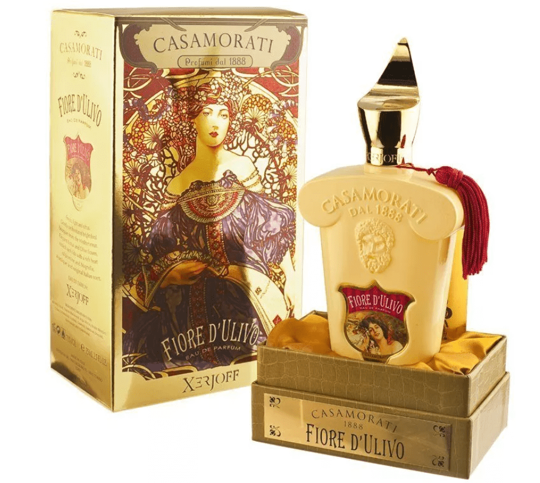
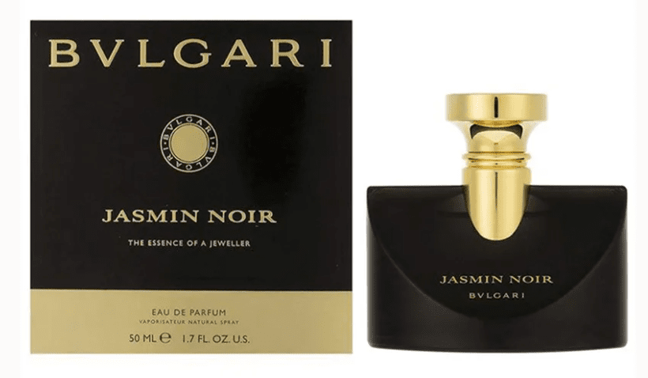
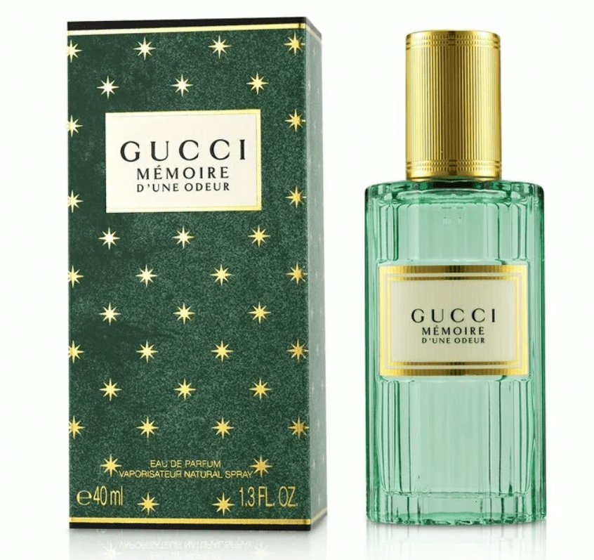
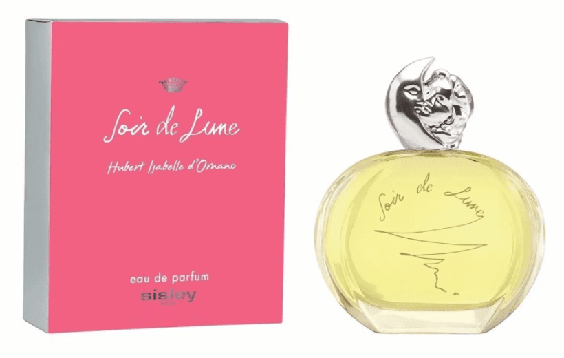
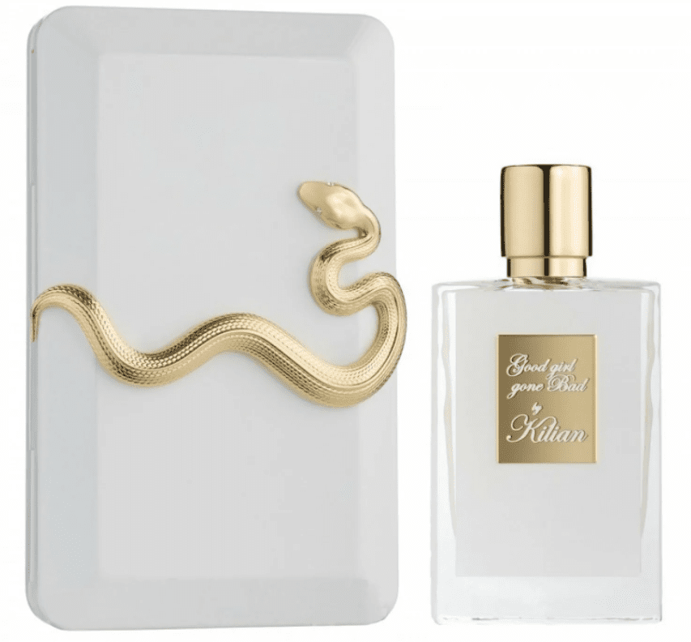
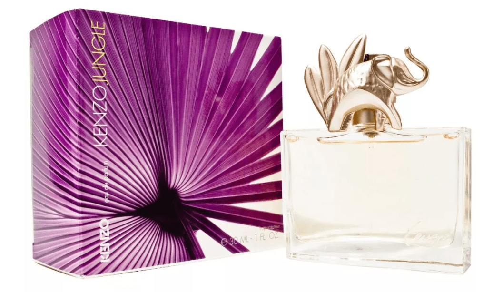
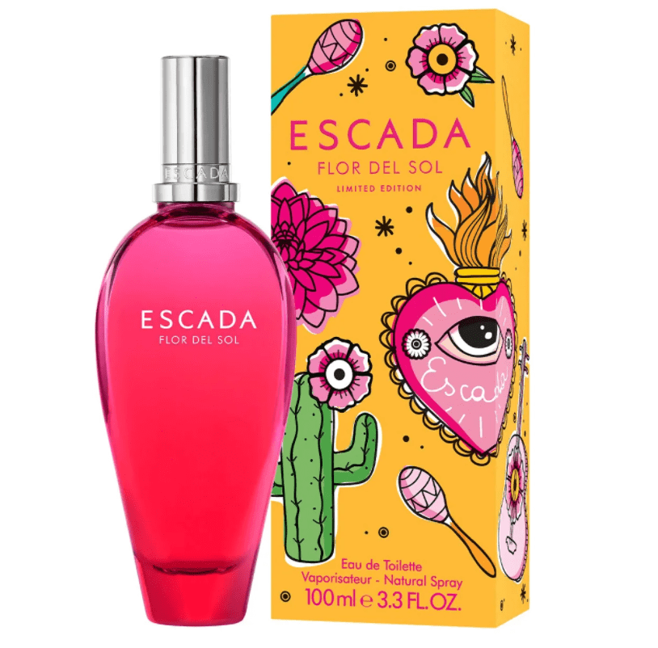
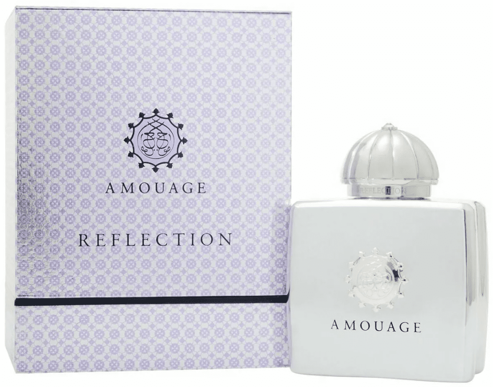

Возможно, здесь вы найдете для себя заветный флакончик духов
10.Casamorati Fiore d’Ulivo by Xerjoff

Чарующий, манящий сладостный аромат Casamorati Fiore d’Ulivo by Xerjoff мысленно перенесет вас в весну, когда все цветет и благоухает! Этот аромат наполнен романтикой, нежностью и любовью. Вышедшие на рынок в 2010 году духи уже успели приобрести необычную популярность, аромат сравнивают с известными композициями. Этот цветочный парфюм состоит из ноток нероли, фиалки, жасмина, бергамота, амбры, чувственного мускуса, что заряжают весенним настроением! Аромат Casamorati Fiore d’Ulivo by Xerjoff останавливает время, позволяя остаться в цветущем саду, наполненном радостью, молодостью и прекрасными цветами.
9.Jasmin Noir by Bvlgari

Если вы делаете акцент на шлейфовости, то можем с уверенностью сказать, что Jasmin Noir by Bvlgari – отличный вариант духов. Может показаться, что «Черный жасмин» термоядерный, но, несмотря на насыщенность, аромат деликатен и тянется за обладательницей весьма деликатным шлейфом. Жасмин и миндаль – вот что в основном влечет женщин в Jasmin Noir by Bvlgari. Стойкость у него отменная – он держится на теле, волосах и одежде. Аромат врезается в память своей загадочностью. Казалось бы, он такой простой, но вытворяет с воображением что-то невероятное! А за всю эту гамму чувств отвечает ароматическая композиция, во главе которой стоит жасмин.
8.Gucci Mémoire D'une Odeur

Аромат Gucci Mémoire D’une Odeur – это воплощение женственности, нежности и изящества, о чем даже говорит флакон. Оформление выполнено потрясающе – по всей упаковке звездочки, внутри коробка тоже со звездочками, только цвет другой – розовый. Флакон примечателен нотками: в верхних звучат ромашка, горький миндаль. В средних изливаются индийский жасмин, мускус, а в базовые нотки парфюмеры решили включить белый кедр, сандал и ваниль, и не прогадали! Это сложный аромат, больше всего в котором ощущается миндаль. Стойкость хорошая – точно больше 5 часов, шлейфовость слабо ощущается, но окружающие однозначно ее чувствуют.
7.Sisley Soir De Lune

Если вы хотите выгодно вложить деньги, вам однозначно стоит присмотреться к аромату Sisley Soir De Lune, обладающему шикарным шлейфом и разлитому в красивый, необычный флакон. Если говорить об аромате, то он олицетворяет, и это можно сказать точно, запах зрелой женственности, мудрости. Опытные парфюмеры раскладывают аромат по нотам следующим образом: вначале звучит лимон, затем мандарин, немного чилийского перца и еле слышимый кориандр. Нотка сердца – цветочная, из нежного риса с жасмином, молодой розы и весенней мимозы. Конечная нота отведена сандаловому дереву, который отлично перекликается с нежным пачули на подушке из дубового мха.
6.Pretty Nina by Nina Ricci
Пробовали ли вы яблоко в карамели? У вас есть такая возможность с ароматом Pretty Nina by Nina Ricci! Этот цветочно-фруктовый аромат вышел в 2008 году. Что о нем можно сказать? Он нежный, легкий, густой, шлейфовый, но подходит только девушкам. При нанесении чувствуется нотка грейпфрута, которая быстро улетучивается. Далее хорошо ощущаются яблоко с малиной, густо политые карамелью. Сложно представить этот аромат на коже в теплое время года, скорее он осенне-зимний (из-за густой карамели). Пару раз брызнув на кожу этот аромат, вы погрузитесь в облако спокойствия, безмятежности и тепла.
5.Good Girl Gone Bad by Kilian

Аромат Good Girl Gone Bad by Kilian относится к цветочно-фруктовой группе. Верхними нотками раскрывается все очарование османтуса и жасмина, после они отдают шефство нарциссу, а базовые нотки отведены амбре. Запах долго сохраняется на коже и даже держится после душа! Аромат долго раскрывается и оставляет неизгладимое впечатление. Женственный, таинственный, страстный – так его можно охарактеризовать. Бренд примечателен тем, что производит все ароматы вручную из высококачественных компонентов.
4.Carolina Herrera Good Girl
По описанию производителя, Carolina Herrera Good Girl – аромат для тех, кто хочет создать образ «хорошей девочки». Он воплощает в себе нотки, пленяющие своей неординарностью и яркостью. Вначале композиция раскрывается резкими аккордами кофе и миндаля – этот запах характеризует таких же сильных девушек. Далее слышатся нежные нотки жасмина и туберозы. Но эта слабость аромата уходит и на смену ей приходят какао-бобы тонка, которые напоминают о внутреннем стержне обладательницы! Carolina Herrera Good Girl – относительно свежий аромат, выпущенный в 2020 году. У него очень эффектное оформление: элегантная туфелька с блестками.
3.Kenzo Jungle L`Elephant

Восточный аромат Kenzo Jungle L`Elephant олицетворяет страсть, интригу и подчеркивает неповторимый образ уверенной в себе женщины. Аромат был создан в 1996 году для раскованных женщин, которые действуют бесстрашно и не признают подчинения. С помощью Kenzo Jungle L`Elephant вы покорите любого мужчину, заставив его думать только о вас! Весь секрет кроется в чарующих нотках: первыми раскрываются мандарин, гвоздика и кардамон, нотками сердца искрятся манго, тмин, иланг, гелиотроп и лакринчик, а базовые нотки отводятся под пачули, амбру и ваниль. Аромат раскрывается только в жарком, влажном климате, становясь более мягким и цветочным.
2.Escada Flor del Sol

Яркий, необычный аромат – такими словами можно описать Escada Flor del Sol, обладающий потрясающим шлейфом! Это однозначно легкий летний аромат, погружающий в атмосферу отдыха и каникул! Путешествие начинается с изысканной нотки цветка георгина, продолжается мексиканскими цветами, а заканчивается сандаловым деревом, превращаясь в аромат, неподвластный времени. Escada Flor del Sol – это взрыв, который может испытать каждая! Он помогает окунуться в лето, закрыв глаза, оставить обыденность позади и окунуться в Мексику, полную веселья и дружественных улыбок!
1.Amouage Reflection Woman

Тонкий, мечтательный аромат с богатым шлейфом Amouage Reflection Woman может стать вашим фаворитом в погоне за совершенством! Аромат покорил миллионы женщин, а все благодаря неповторимой композиции. Впервые он вышел в свет в 2017 году, и его полюбили за жизнерадостность и ожидание чуда, которое не покидает с раскрытием каждой нотки. Цветочный аромат переносит в райский сад, а его композиция состоит из тропических зеленых листьев, магнолии, жасмина, амбры, кедра, санталы и болотной урчи.